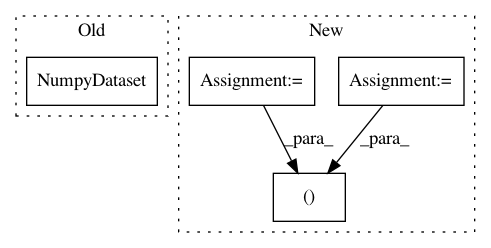

dc4eba996e003be0331cd78e7ba7c477f30f4e67,deepchem/utils/test/test_generator_evaluator.py,TestGeneratorEvaluator,test_compute_model_performance_multitask_classifier,#TestGeneratorEvaluator#,17
Before Change
y1 = np.concatenate((class_0, class_1))
y2 = np.concatenate((class_1, class_0))
X = NumpyDataset(X)
ys = [NumpyDataset(y1), NumpyDataset(y2)]
databag = Databag()
After Change
def test_compute_model_performance_multitask_classifier(self):
n_data_points = 20
n_features = 1
n_tasks = 2
n_classes = 2
X = np.ones(shape=(n_data_points // 2, n_features)) * -1
X1 = np.ones(shape=(n_data_points // 2, n_features))
X = np.concatenate((X, X1))
class_1 = np.array([[0.0, 1.0] for x in range(int(n_data_points / 2))])
class_0 = np.array([[1.0, 0.0] for x in range(int(n_data_points / 2))])
y1 = np.concatenate((class_0, class_1))
y2 = np.concatenate((class_1, class_0))
y = np.stack([y1, y2], axis=1)
dataset = NumpyDataset(X, y)
features = Feature(shape=(None, n_features))
label = Label(shape=(None, n_tasks, n_classes))
dense = Dense(out_channels=n_tasks * n_classes, in_layers=[features])
logits = Reshape(shape=(None, n_tasks, n_classes), in_layers=dense)
output = SoftMax(in_layers=[logits])
smce = SoftMaxCrossEntropy(in_layers=[label, logits])
total_loss = ReduceMean(in_layers=smce)
In pattern: SUPERPATTERN
Frequency: 3
Non-data size: 4
Instances
Project Name: deepchem/deepchem
Commit Name: dc4eba996e003be0331cd78e7ba7c477f30f4e67
Time: 2018-05-23
Author: peastman@stanford.edu
File Name: deepchem/utils/test/test_generator_evaluator.py
Class Name: TestGeneratorEvaluator
Method Name: test_compute_model_performance_multitask_classifier
Project Name: deepchem/deepchem
Commit Name: eef7bc2d0c94c43f94c18612e8d2b505b168b504
Time: 2017-03-06
Author: bharath.ramsundar@gmail.com
File Name: deepchem/models/tf_new_models/support_classifier.py
Class Name: SupportGraphClassifier
Method Name: predict_proba_on_batch
Project Name: deepchem/deepchem
Commit Name: eef7bc2d0c94c43f94c18612e8d2b505b168b504
Time: 2017-03-06
Author: bharath.ramsundar@gmail.com
File Name: deepchem/models/tf_new_models/support_classifier.py
Class Name: SupportGraphClassifier
Method Name: predict_on_batch